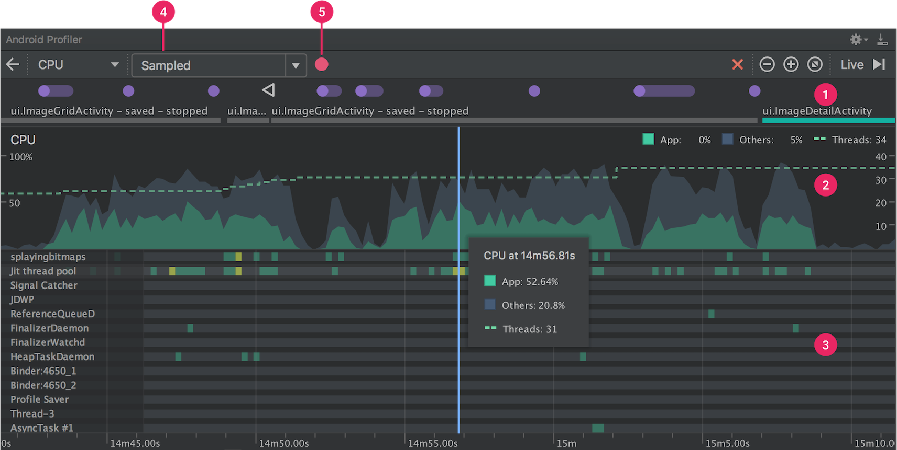

更好用的CPU Profile工具
在使用TraceView的时候，虽然能分析App的方法耗时和调用顺序，但是TraceView还是不直观，很多时候一堆数据让人很难爱起来，Systrace的问题这过于笼统，没办法精确到代码方法，虽然可以手工插入trace节点但是针对没有提前预知或者插节点的代码来说，就不太友好了。
不同的工具出发点是不同的，systrace用于手机系统信息，解决卡顿掉帧。 如果我们希望了解CPU的使用情况和代码的执行逻辑，线程使用，那么可以借助Android Studio 3.x自带的CPU Profile。
CPU Profiler 可帮助您实时检查应用的 CPU 使用率和线程活动，并记录函数跟踪，以便您可以优化和调试您的应用代码。
功能面板

- Event 时间线
- CPU 时间线：
- 线程活动时间线
- 记录配置：Sampled,Instrumented，前者为采样追踪，后者为全量追踪
- 记录按钮